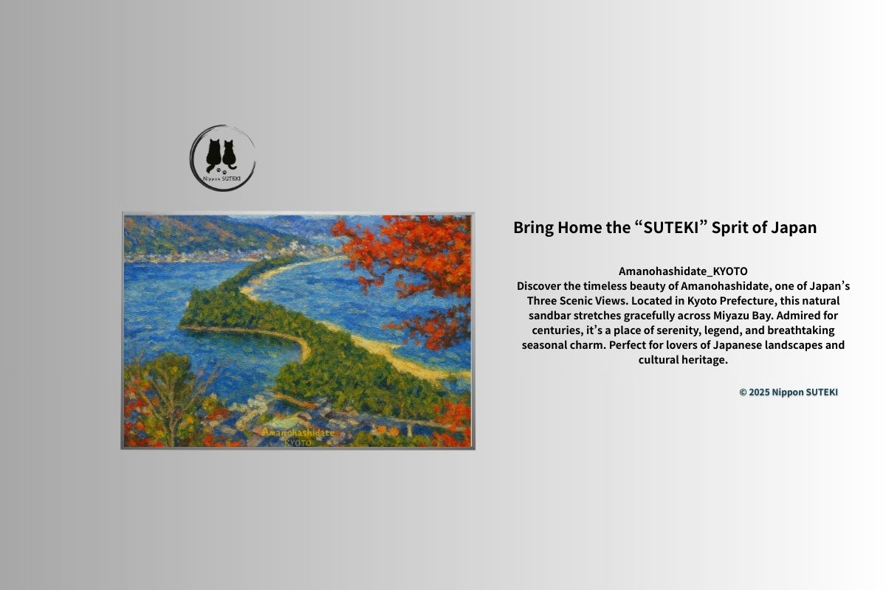
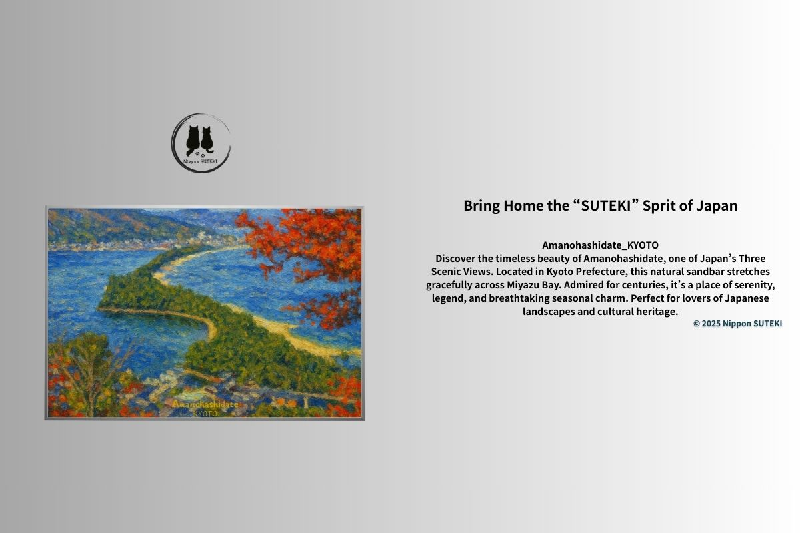

Stories Behind the Art
Small, quiet tales about Japan’s landscapes, seasons, and hidden cultural beauty.

The Blood Beneath the Blossoms
Power, deception, and the hidden meaning carved into Osaka Castle’s stones — what the walls were built to remember — by Kiri

Stone and Petals
A quiet moment where cherry blossoms meet unchanging stone — two different kinds of time in one place — by Sari

Why Japan Loves Fleeting Moments
Snow on Mount Fuji, cherry blossoms in bloom, and the quiet beauty of things that do not last — by Kiri

Japan’s Hidden Fifth Season
A brief moment when winter meets spring — snow, sakura, and a secret season near Mount Fuji — by Sari

The Ritual of the Upside-Down World
Why visitors look at Amanohashidate upside down — dragons, Tokoyo, and an ancient form of analog VR — by Sari

The Fallen Path of the Gods
A divine bridge that fell from heaven — myth, pine trees, and the romance beneath your feet — by Kiri

Matsushima — Why It Became One of Japan’s Three Great Views
The history behind Nihon Sankei, 260 islands, samurai culture, and the symbolic role of Fukuura Bridge — by Kiri

Matsushima — Where Beauty Hides a Story
A quiet reflection on Fukuura Bridge, encounters, and the hidden meaning behind Matsushima’s beauty — by Sari